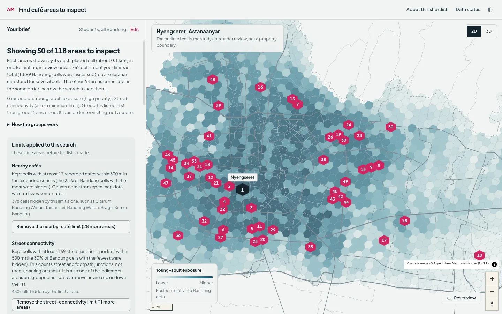
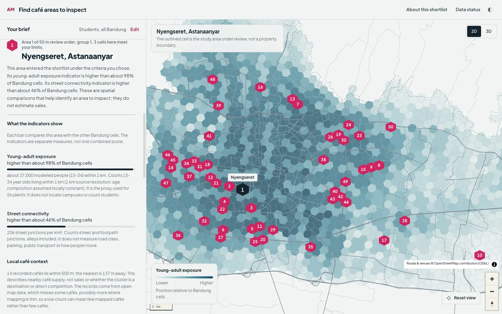
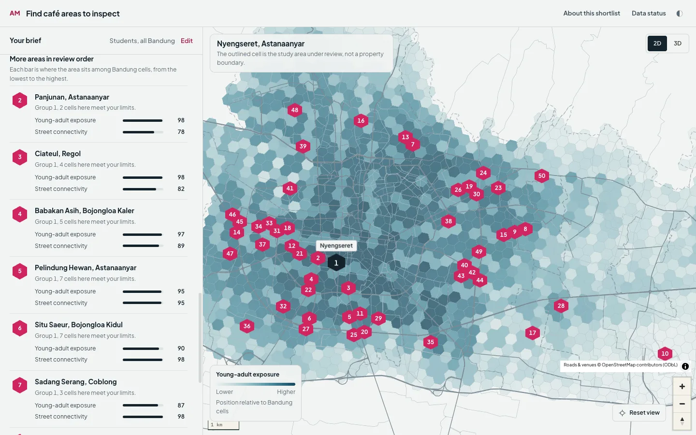
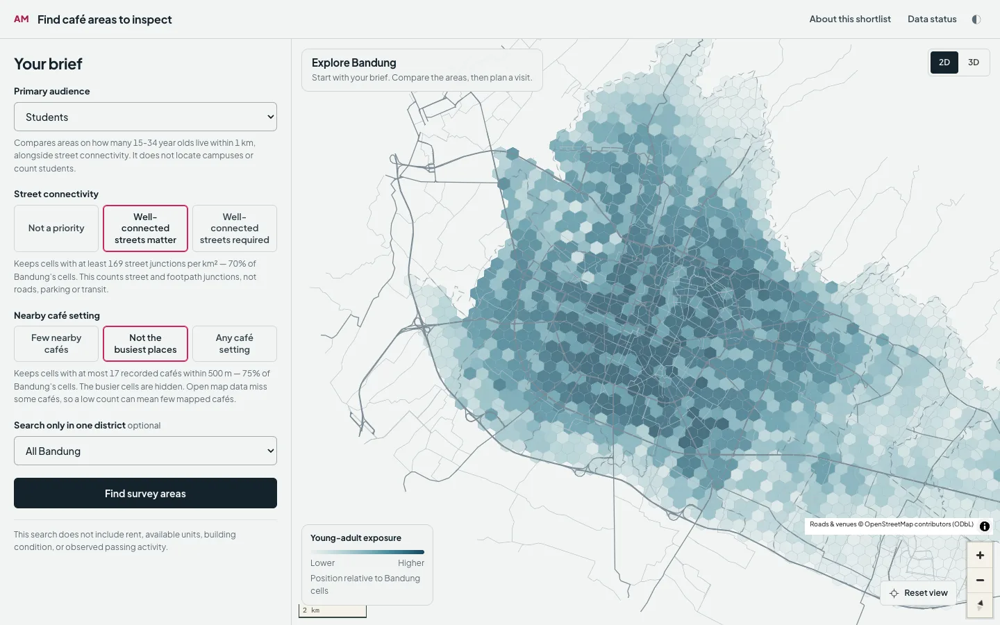
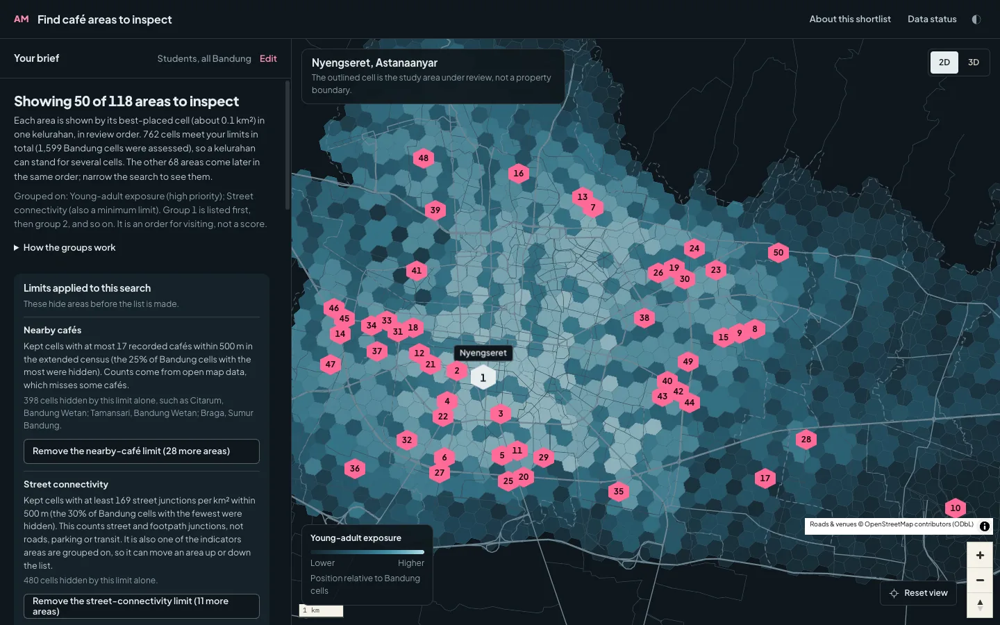
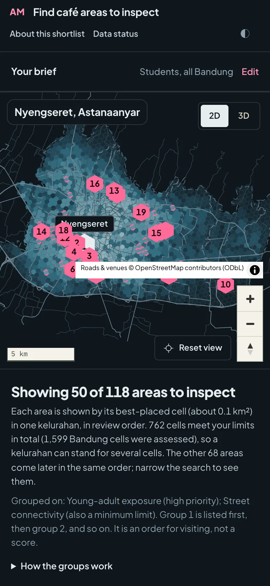

Choosing where to visit: screening Bandung’s café neighbourhoods
A café owner cannot walk every kelurahan. This tool narrows 1,599 hexagon cells to a shortlist worth a site visit, prints every limit that shaped the list, and says plainly what the data cannot know.
Objective
Someone planning a new café in Bandung has a practical question before any lease: which neighbourhoods are worth walking this week? The tool answers that and nothing more. It screens places for a site visit; it does not say where to open, and it never predicts sales.
That boundary shapes every design choice. There is no rent, no footfall count and no sales figure in the data, so any single “best location” score would be invented. The product shows evidence, the limits applied to it, and what to check on foot.
Method
- Cells. The city is cut into hexagons, the shape of the data unit. Each cell carries separate indicators: young-adult exposure, residential population, commercial activity, tourism, nearby cafés, built intensity and street connectivity.
- Position, honestly worded. An indicator is shown as where the cell sits among Bandung cells. When many cells share a value (about 43% record zero for some counts), the tool says “at zero, as in about 43% of cells” instead of a percentile that would overstate it.
- Limits the reader sets. A street-connectivity floor, a nearby-café ceiling and an optional district. Each is stated with its threshold (for example “at most 17 recorded cafés within 500 m”), how many cells it hides, and a one-click way to remove it with the exact number of areas that would return.
- Groups, not a score. Cells that remain are grouped by Pareto dominance on the chosen indicators: group 1 holds the cells that no other cell beats on every indicator. The reader’s priority orders each group. The list shows the best-placed cell of each kelurahan.
- Sensitivity. Each limit the brief sets is moved by 10 percentile points, up and down, to see whether an area still qualifies. A brief with no limits is told there was nothing to move.
Data
The indicators come from OpenStreetMap contributors (ODbL), Overture Maps Foundation places and buildings, WorldPop population surfaces (CC BY 4.0) and European Commission JRC layers (CC BY 4.0). Population is a modelled 1 km surface: the report states that it overstates the city centre and is never a headcount, and the interface calls it “modelled people” wherever a figure appears.
Some checks used licensed or municipal data. That data is not shown, derived into figures here, or republished on this site.
The tool
A numbered hexagon is the one device that ties the page together: the marker on the map and the badge in the list are the same mark with the same number. Everything else is kept quiet, with one pink reserved for what the reader has picked.






What it cannot say
- It has no rent, available units, frontage, observed passing activity or sales. The report lists these as things to check on site.
- Café counts come from open map data, which misses some cafés; a low count can mean few mapped cafés. No café is confirmed open.
- “Young-adult exposure” is where 15–34 year olds live. It does not locate campuses or count students, and the audience note says so where the choice is made.
- A cell is about 0.1 km²; a kelurahan can stand for several, and the report names the one cell its figures describe.
- Nothing here validates against business outcomes, because none were available. The tool is for choosing where to look, not for judging whether a café will work.
How it was checked
More than 850 automated tests run against the real data. The dashboard’s own logic (headings, ordering, what removing a limit adds, how a value is printed) is executed under Node against live API responses, and the same value rule is required to print identically in the app and the printed report over every cell and indicator.
Several independent review passes, using separate AI reviewers given only the data and the documentation, re-derived the screening from the raw tables and read the reports as an outsider would. They found real defects: a value at the exact median described as “below the midpoint”, a report that described only the first of several compared areas, and a limit that was tested against a café ceiling the brief never set. Each was fixed and pinned by a test, and the tests themselves were checked by breaking the code on purpose and confirming a test failed.